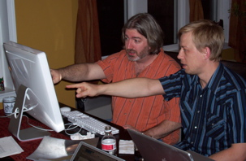

The Core Team
|  |  |
|
| David and Aslak | Dave Astels | Pat |
Contributors
Apologies to recent contributors, but the following list is pretty out of date.
In alphabetical order (by last name)
- Daniel De Aguiar
- Patch [#15446] Removed duplicate word in with_steps_for comment.
- Chris Anderson
- Patch to return strings in response to :to_param (in generated controller/view specs)
- Patch to add —skip-migration option to rspec_scaffold generator
- Ruy Asan
- Patch [#10698] Running with —drb executes specs twice (fix included)
- Initial code for ‘switch between source and spec file’ command in Spec::Mate (Patch [#10791])
- Sinclair Bain
- Patch (sort of) [#15608] Story problem if parenthesis used in Given, When, Then or And
- Patch [#11101] StringHelpers.starts_with?(prefix) assumes a string parameter for prefix
- Patch for bug [#10577] Rails with Oracle breaks 0.9.2
- Ken Barker
- Patch [#10921] Allow verify_rcov to accept greater than threshold coverage %’s via configuration
- Patch [#10920] Added support for not implemented examples
- Jonathon Barnes
- Tighter integration with Test::Unit for ActiveRecord fixtures. Speed up fixtures.
- François Beausoleil
- Patch [#10260] Spec::Mocks::Mock#inspect returns way too much data
- Wilson Bilkovich
- lambda {…}.should_change(obj, :message)
- ar_subclass.should_have(n).errors_on(:attribute)
- mock_model in Spec::Rails
- Ola Bini
- Paired with Aslak to iron out minor JRuby issues.
- Mike Breen
- Patch [#13098] Error running “script/spec_server” after upgrading from 1.0.5 to 1.0.8
- Ryan Carmelo Briones
- Patch [#396] controllers/application.rb <=> spec/controllers/application_controller_spec.rb when using Alternate File
- Jake Cahoon
- Patch #417 – Added additional characters to be escaped in step strings
- Roman Chernyatchik
- Patch [#325] Spectask works better with multiple versions of ruby
- Wincent Colaiuta
- Patch LH[#281] Invert sense of “spec —diff”
- Patch [#11254] RSpec syntax coloring and function pop-up integration in TextMate
- Patch [#11252] Should be able to re-load file containing shared behaviours without raising an exception
- Patch [#12010] Nicer failure message formatting
- Patch [#14923] Nested shared behaviours get executed twice
- Patch LH[#393] should_receive no longer alters the method visibility when partially mocking an object
- Bob Cotton
- Patch LH[#222] ExampleGroupFactory.default resets previously registered types.
- Patch LH[#224] Nested ExampleGroups do not have a spec_path
- Patch LH[#186] reintroduce ExampleGroup.description_options
- Patch LH[#134] ExampleMatcher should match against before(:all)
- Patch [#13118] Rinda support for Spec::Distributed
- Support for context_setup and context_teardown (now before(:all) and after(:all))
- Patch [#9678] Custom runner command line switch, and multi-threaded runner
- Patch [#9605] Patch for ER 9472, shared behaviour
- Patch [#11868] Add ability for pending to optionally hold a failing block and to fail when it passes
- Patch [#12484] Allow an ExampleGroup’s Description to flow through to the Formatter
- Lachie Cox
- Initial Rails support
- Diffing enhancements for Objects and custom formats
- Ryan Davis
- Patch LH[#321] Add eval of block passed to raise_error matcher
- Assorted patches for integration with autotest
- Jonathan del Strother
- Patch LH[#486] Avoid ‘invalid option -O’ in autotest
- Ian Dees
- Patch LH[#183] quiet the Story Runner backtrace
- Patch [#11917] Cleaner Spec::Ui error for failed Selenium connection
- Rick DeNatale
- Patch LH[#332] hash_including mock argument matcher
- Craig Demyanovich
- Patch LH[#241] Add support for should_not render_template
- Zach Dennis
- Patch LH[#324] Consolidate :steps_for and :steps
- Patch LH[#487] Add mock_model#as_new_record
- James Deville
- Patch [#13451] Add a null_object option to mock_model
- Patch for [#13065] Named routes throw a NoMethodError in Helper specs
- Steven Duncan
- Documentation for rake task
- Eloy Duran
- Patch [#11921] Adds the correct controller_name from derived_controller_name() to the ViewExampleGroupController
- Ienaga Eiji
- Patch [#12156] smooth open mate patch
- Martin Emde
- Fix describe Object, “description contains a # in it”
- Dayo Esho
- Patch LH[#217] and_yield clobbers return value from block
- Lindsay Evans
- Patch for Spec::Rails on Windows
- Nicholas Evans
- Patch [#10410] redirect_to does not behave consistently with regards to query string parameter ordering
- Jens-Christian Fischer
- Patch [#14388] protect_against_forgery? helper method not being picked up by rspec_on_rails
- Sean Geoghegan
- Patch [#380] to add —loadby:random option
- gmarik
- Patch LH[#174] to make generated view specs work properly for nested controllers
- David Goodlad
- Patch for allowing non-Strings as partial_paths in view/specs
- Patch for file mappings for rspec/autotest integration
- James Edward Gray II
- Patch to improve syntax highlighting in TextMate
- Corey Haines
- Patch [#343] include_text matcher for rails
- Coda Hale
- Patch [#279] Autotest never calls the :red hook
- Kyle Hargraves
- Patch [#367] Yellow pending steps in story’s text formatter
- Patch [#142] verify_rcov fails with latest rcov
- Patch [#10951] Odd instance variable name in rspec_model template
- Patch [#11608] Exclude rspec_on_rails from plugin spec runs
- Patch [#12066] Docfix for mocks/mocks.page
- Patch [#12300] rr integration
- Bryan Helmkamp
- Patch LH[#162] Tweak format of generated spec.opts to be more obvious
- Patch LH[#163] Generate a comment about alternate mocking frameworks
- Patch LH[#16] Have SimpleMatchers expose their description for specdocs
- Patch [#14399] Show pending reasons in HTML report
- Patch [#14095] Don’t have ./script/generate rspec create previous_failures.txt
- Chris Hoffman
- Patch for spec:translate task in Spec::Rails
- Chad Humphries
- Patch [#10921] Allow verify_rcov to accept greater than threshold coverage %’s via configuration
- Patch [#10920] Added support for not implemented examples
- Jake Howerton
- Port of Kevin Clark’s ARTS to RSpec
- Eiji Ienaga
- Patch LH[#404] Fixed error in documentation
- Gerrit Kaiser
- Patch LH[#230] mock(:null_object=>true) plays nice with HTML
- Shintaro Kakutani
- Patch LH[#235] ActionView::Base.base_view_path isn’t clear against Rails 2.0.2
- Patch [#13814] RSpec on Rails w/ fixture-scenarios
- Patches for coloured progress
- Assorted Rails patches
- Nick Kallen
- Tighter integration with Test::Unit for ActiveRecord fixtures. Speed up fixtures.
- Erik Kastner
- Patch to rename file_list to spec_file_list in spectask.rake (to avoid conflicts w/ other tools)
- Brandon Keepers
- Patch [#15465] Edge rails #8115 changed plugin loading, causing conflict between rspec and rails plugin
- Patch [#13881] Dynamically include Helpers that are included on ActionView::Base
- Kero
- Patch to add step_upcoming to story listeners.
- Rich Kilmer
- Underscore syntactic sugar
- Ryan Kinderman
- Patch [#12935] Remove requirement that mocha must be installed as a gem when used as mocking framework.
- Josh Knowles
- Patch LH[#197] Use ActiveSupport’s Inflector (when available) to make ‘should have’ read a bit better.
- Patch LH[#193] support ‘string_or_response.should have_text(…)’
- Patch [#149] Update contribute page to point towards lighthouse
- Patch [#147] Allow stories to use Spec::Matchers
- Patch [#10245] Patch to HTML escape the behavior name when using HTML Formatter
- Patch [#11221] Autotest support does not work w/o Rails Gem installed
- Jens Krämer
- Patch [#12701] Allow checking of content captured with content_for in view specs
- Michal Kwiatkowski
- Patch to get RSpec to work w/ Heckle +/- 1.2
- Jarkko Laine
- LH[#132] Plain Text stories should support Given and Given:
- Luis Lavena
- LH[#244] No coloured output on Windows due missing RUBYOPT
- Alexander Lang
- Patch [#198] clean up story steps after each story
- Matthijs Langenberg
- Patch [#12682] Not correctly aliasing original ‘stub!’ and ‘should_receive’ methods for ApplicationController
- Patch [#12719] rspec_on_rails should not include pagination helper
- Evan Light
- Patch [#13913] Scenario should treat no code block as pending
- Mikko Lehtonen
- Patch LH[#178] small annoyances running specs with warnings enabled
- Will Leinweber
- Patch [#13339] Add the ability for spec_parser to parse describes with :behaviour_type set (with Dav Yaginuma)
- Ian Leitch
- Patch LH[#226] Add lib/ specs to ‘rake stats’
- Patch [#11888] rspec_on_rails spews out warnings when assert_select is used with an XML response
- Patch [#12817] Cannot include same shared behaviour when required with absolute paths.
- Patch [#13952] Fix for performance regression introduced in r2096
- Patch [#13943] ProfileFormatter (Top 10 slowest examples)
- Patch [#14023] Small optimization for heavily proxied objects.
- Jay Levitt
- Patch [#13143] ActionView::Helpers::RecordIdentificationHelper should be included if present
- Patch [#13016] [DOC] Point out that view specs render, well, a view
- Tim Lucas
- Patch [#10631] redirect_to matcher doesn’t respect request.host
- Riley Lynch
- Patches for the rake task
- Ben Mabey
- Patch for story runner exit code.
- Dan Manges
- Fixed visibility problem for ActionController::Base#render in Spec::Rails
- Mike Mangino
- Patch [#14043] Change output ordering to show pending before errors
- Patch for [#13370] Weird mock expectation error
- Patch for [#13065] Named routes throw a NoMethodError in Helper specs
- Micah Martin
- Spec::Rails patches for partials
- James Mead
- Modified mocha to allow for its use outside of test/unit
- Adam Meehan
- Patch LH[#267] Setting mock_model object id with stubs hash
- Patch LH[#448] fix to_param in mock_model returning auto id when passed stubbed id
- Mathias Meyer
- Patch LH[#548] Previously stubbed method doesn’t fail on should_not_receive
- Saimon Moore
- Patch LH[#14] Adding support for by_at_least/by_at_most in Change matcher.
- Curtis Miller
- [#13336] Helper directory incorrect for rake stats in statsetup task
- Kyosuke MOROHASHI
- Patch [#11807] Daemonize spec_server and rake tasks to manage them.
- Rick Olson
- Patch to get rspec_on_rails working with rails edge (>= 8862)
- Bret Pettichord
- Patch [#10473] obj.should exist (new matcher)
- Tim Pope
- Patch LH[#413] Disable color codes on STDOUT when STDOUT.tty? is false
- Matt Patterson
- Patch [#440] to add failing example of before filters running twice.
- Matthew Peychich
- Array =~ matcher works with subclasses of Array
- Carl Porth
- Patch [#12174] mishandling of paths with spaces in spec_mate switch_command
- Patch [#12237] (tiny) added full path to mate in switch_command
- Patch [#12722] the alternate file command does not work in rails views due to scope
- Jay Phillips
- Patch [#11615] Partial mock methods give ambiguous failures when given a method name as a String
- Patch [#13274] ThrowSymbol recognized a NameError triggered by Kernel#method_missing as a thrown Symbol
- Yurii Rashkovskii
- Patch [#13833] ActionView::Helpers::JavaScriptMacrosHelper removed after 1.2.3
- Patch to improve generated descriptions for the “be” matcher
- Patch [#12611] should_not redirect_to implementation
- Luke Redpath
- TextMate bundle
- Readable HTML output!
- Patrick Ritchie
- Patch LH[#274] support —drb in spec.opts
- Steve Ross
- Patch [#9132] Rakefile spec:doc can fail without preparing database
- Arthur Schreiber
- Patch LH[#457] PositiveOperatorMatcher and NegativeOperatorMatcher fail when #send is overwritten
- Nick Sieger
- Spec::Rails patches for stats
- Daniel Siemssen
- Spec::Rails patches for spec_server
- Nathan Sobo
- Specmate + drb fix
- Jon Strother
- Patch LH[#344] spec_server reloads fixtures
- Trevor Squires
- Patch LH[#12] Fix for TM when switching to alternate file
- Nathan Sutton
- Patch [#15659] GivenScenario fails when it is a RailsStory
- Kouhei Sutou
- Patches for Emacs
- Handling of Interrupt
- Antti Tarvainen
- Patch LH[#333] Fixed bug where rspec loads files repeatedly when running heckle
- Patch LH[#280] Fixed bug where heckle runs rspec runs heckle runs rspec etc.
- Patch [#14254] Improved error handling for Object#should and Object#should_not
- Patch [#14186] Remove dead code from message_expecation.rb
- Patch [#14183] Tiny improvement on mock_spec.rb
- Patch [#14208] Fix to Mock#method_missing raising NameErrors instead of MockExpectationErrors
- Patch [#14255] Fixed examples in mock_spec.rb and shared_behaviour_spec.rb
- Patch [#14156] False positives with should_not
- Patch [#14170] route_for and params_from internal specs fixed
- Patch [#14142] Fix for bug #11602: Nested #have_tag specifications fails on the wrong line number
- Patch [#10315] to fix pre_commit bug 10313 – pre_commit_rails: doesn’t always build correctly
- Patch [#11500] Documentation: no rails integration specs in 1.0
- Scott Taylor
- Patch [#11919] Making non-implemented specs easy in textmate
- Patch [#13078] Develop rspec with autotest
- Patch [#12986] Autotest Specs + Refactoring
- Patch [#11509] Documentation – RSpec requires hpricot
- Patch [#9509] allow spaced options in spec.opts
- Patch [#9510] Added html formatter spec file for Ruby 1.8.6
- Patch [#9511] Clarification to README file in spec/
- Patch [#9852] Patch for RSpec’s Website using Webgen 0.4.2
- Patch [#9925] Changed “.rhtml” to “template” in REST spec generator
- Patch [#9926] Rakefile – RSPEC_DEPS constant as an Array of Hashes instead of an Array of Arrays
- Patch [#10636] Added spec for OptionParser in Runner (Patch from Scott Taylor)
- Patch LH[#326] Deprecation warnings for specs that assume auto-inclusion of modules
- Patch LH[#524] Privatize Have#method_missing and enhance its respond_to?
- Patch LH[#485] Add file and line numbers to pending specs
- Steve Tendon
- Patch [#9458] The rspec_scaffold generator does not take into account class nesting
- Jonathan Tron
- Patch for Spec::Rails resource_generator
- Patch for RSpec.tmbundle to make it work with RSpec installed as a plugin
- Mark Van Holstyn
- Patch LH[#15] Reverse loading of ActionView::Base helper modules
- Patch [#134] Only load spec inside spec_helper.rb
- Mike Vincent
- Patch LH[#181] Regression on generators due to internal changes in rails edge
- Rupert Voelcker
- Patch [#13567] patch to allow stubs to yield consecutive values
- Patch [#13559] reverse version of route_for
- Florian Weber
- RSpec.tmbundle and the spec_server that comes with Spec::Rails are based on Florian’s TDDMate
- Nikolai Weibull
- Core patches for spec names
- Jim Weirich
- Modified flexmock to allow for its use outside of test/unit
- Supplied plugin patch to support flexmock directly in rspec
- Ian White
- Patch LH[#271] Since @template.finder, isolation mode doesn’t work
- Patch for [#11545] Rspec doesn’t handle should_receive on ActiveRecord associations
- Joseph Wilk
- Patch LH[#300] Showing Story/Scenario Failure Fix for HTML Story formatter
- Patch LH[#439] Showing Story/Scenario Failure Fix for Plain Text Story formatter
- Mike Williams
- Patch LH[#276] to support the lib directory in rails apps with the Textmate Alternate File command.
- Core patches for arbitrary comparisons like 5.should_be < 6
- Chad Wooley
- Patch to mocks to make it possible to specify raised exception instance
- Dav Yaginuma
- Patch [#13339] Add the ability for spec_parser to parse describes with :behaviour_type set (with Will Leinweber)
If you think your name ought to be here, please contact the RSpec team.